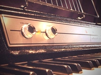

| Photo |
Description |
Price |
 |
The Rhodes piano is an electro-mechanical piano, invented by Harold Rhodes during the fifties and later manufactured in a number of models, first in collaboration with Fender and after 1965 by CBS. It employs a piano-like keyboard with hammers that hit small metal tines, amplified by electromagnetic pickups. |
$1400 |
|  |
The Wurlitzer electric piano is an electro-mechanical piano, created by the Rudolph Wurlitzer Company of Mississippi. The Wurlitzer company itself never called the instrument an "electric piano", instead inventing the phrase "Electronic Piano" and using this as a trademark throughout the production of the instrument. It employs a piano-like keyboard with hammers that hit small metal tines, amplified by electromagnetic pickups. |
$1600 |
 |
A Clavinet is an electronically amplified clavichord manufactured by the Hohner company. Each key uses a rubber tip to perform a hammer on a string. Its distinctive bright staccato sound is often compared to that of an electric guitar. Various models were produced over the years, including the models I, II, L, C, D6, and E7. |
$1200 |